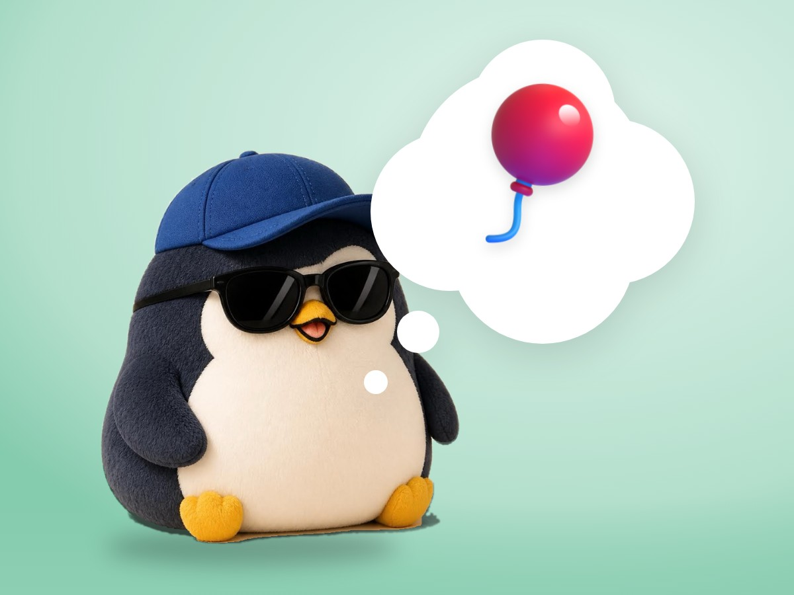

🐧 EVERYDAY LIFE⚡ 22 SEC
The things you want to do have a best-before date 🎈

Best Before
It seems the things you want to do have a "best before" date.
Big Wishes
Seeing the aurora, climbing Mt. Fuji, diving in the sea.
Getting Smaller
This is because, as you get older, the "I want to" feeling itself gets smaller.
⚡ TRY IT
The wish time machine
Tap + to move time. Pin the wishes you will do this year.
⏳ Years from now0
🎈 Balloon size = how much you want it
See the aurora
Climb Mt. Fuji
Dive in the sea
Camp under the stars
Now, every balloon is big. What happens later?
🎈 Some balloons are getting small…
💤 Some wishes fell asleep. Go back and pin them!
📌 All 4 pinned! A busy, fun year. 🐧✨
Kiddie Pool
It is the same as a 3-year-old saying, "I will buy a kiddie pool when I grow up."
This Year
I want to try it "this year," not "someday."
📚 I learned this from the Japanese blog "Panda no Ondo".
PREVIOUS POST
Think of it as returned, not lost